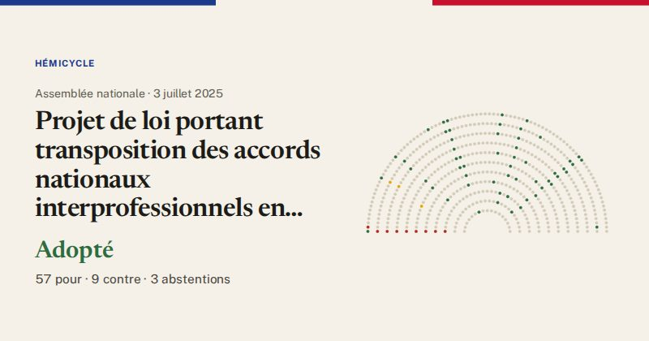

Assemblée nationale · scrutin n°2935 · 3 juillet 2025
Projet de loi portant transposition des accords nationaux interprofessionnels en faveur de l’emploi des salariés expérimentés et relatif à l’évolution du dialogue social (vote final, première lecture)
Adopté
57pour
9contre
3abstentions

Le vote de chaque groupe
| Groupe | Pour | Contre | Abst. | Membres |
|---|---|---|---|---|
| La France insoumise (LFI-NFP) | 1 | 9 | 0 | 71 |
| GDR (communistes) | 0 | 0 | 1 | 17 |
| Écologiste et Social | 1 | 0 | 2 | 38 |
| Socialistes et apparentés | 6 | 0 | 0 | 66 |
| LIOT | 1 | 0 | 0 | 23 |
| Ensemble pour la République | 13 | 0 | 0 | 93 |
| Les Démocrates (MoDem) | 5 | 0 | 0 | 36 |
| Horizons & Indépendants | 9 | 0 | 0 | 34 |
| Droite Républicaine | 4 | 0 | 0 | 49 |
| UDR (Union des droites) | 1 | 0 | 0 | 16 |
| Rassemblement National | 15 | 0 | 0 | 123 |
| Non-inscrits | 1 | 0 | 0 | 11 |